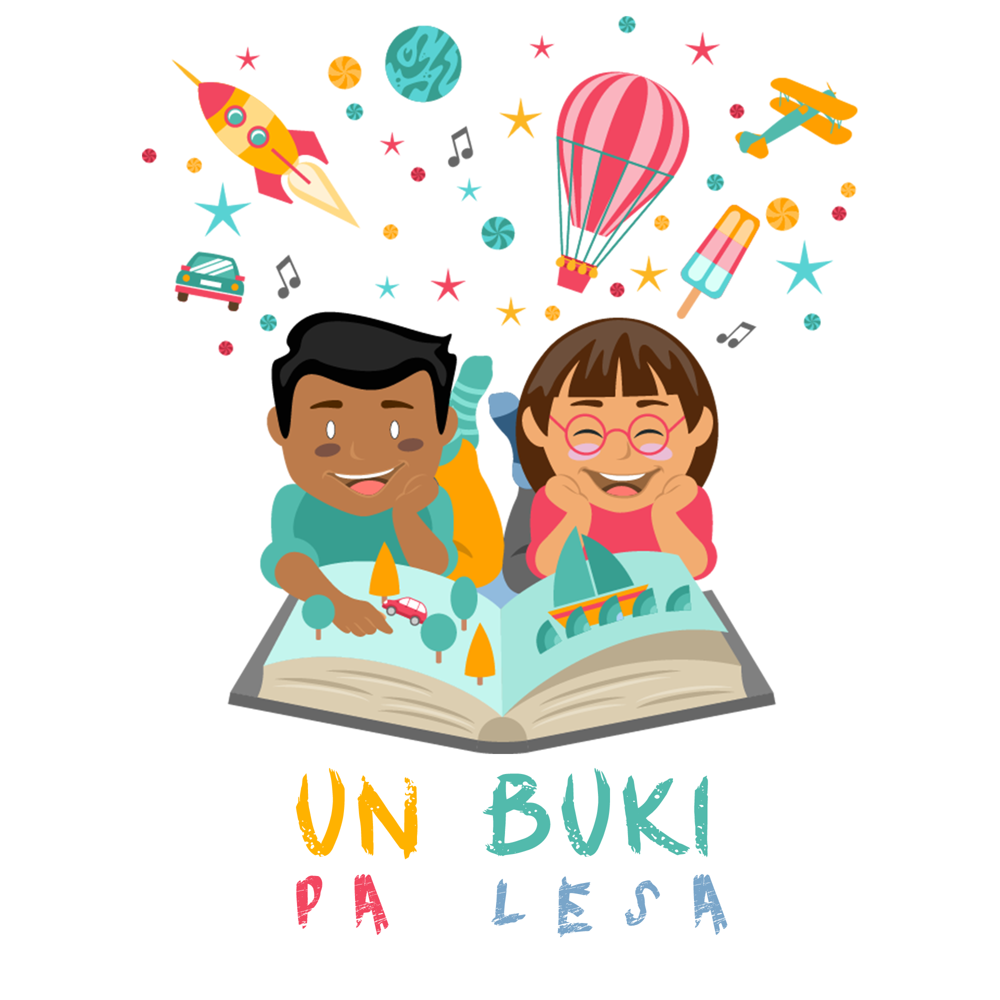

E proyekto “Un Buki Pa Lesa” a wordu lansa na 2016 komo regalo pa e komunidat di Korsou na okashon
di selebrashon di 35 aña di eksistensia di JCI Involvement of Banda Ariba (IOBA) Curacao. “Un Buki Pa
Lesa” ta kontribui na e desaroyo di edukashon na Korsou na un manera “SMART”. Den e prome fase di e
proyekto (2016) e hoben nan aktivo di JCI IOBA Curacao a uni forsa i skirbi buki nan pa mucha nan di
“skol di fundeshi” na nos idioma Papiamentu.
Pa hasi uso di inovashon i teknologia avansa, nos a skohe pa digitalisa i anima e buki nan. Asinaki nan ta
aksesibel via “smart devices”. Den e di dos fase di e proyekto nos a desaroya e aplikashon kual lo ser
huza pa por lesa e buki nan via “smart devices” (2016 – 2018).
JCI IOBA Curacao ta orguyoso pa por drenta den e delaster fase di e proyekto, kual ta hasi e aplikashon
aksesibel pa nos mucha nan (2019). Nos meta ta pa enkurasha nos mucha nan lesa buki na nan mes
idioma I sigui desaroya nan abilidat pa kompronde e idioma. Tambe nos deseo ta pa e buki nan yuda
amplia e desaroyo general propio di nos mucha nan.
Nos ta yama danki na tur partner, sponsor i partisipante na e proyekto ku a kontribui na hasi nos regalo
pa Korsou un realidat.